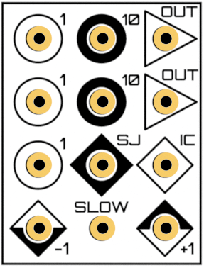
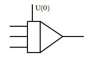
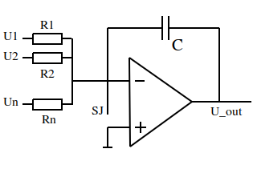
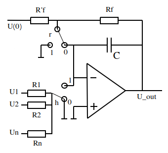

4. Integrator¶
|  |  |
THAT integrator unit |
Integrator symbol |
{kind=link}
{kind=link}
4.1. Basics¶
Next to the summer, the integrator is the most important computing element, which is to be found on most if not all electrical analog computers.
It fullfills the equation
where:
Note the sign change at the integrator output!
4.2. Electrical circuits¶
4.2.1. Principle electronic circuit¶
|  |
Principle circuit of an integrator |
{kind=link}
There is only one difference between the summer and principle integrator circuit: The feedback resistor \(R_f\) of the summer is replaced by a capacitor C.
Just as in the summer ciruit, the operation amplifier always tries to compensate any current occuring at it’s negative input caused by the input voltages.
In opposition to the summer, the integrator circuit cannot really compensate the input current because the feedback capacitor blocks direct current. Instead it increases it’s output voltage as long as the sum of the input voltages is greater zero (and decreases the output for negative inputs). Therefore, this circuit performs a mathematical integration of given inputs over time.
The integrator is the only computing element which includes time as free variable in it’s computing result, which is why the integrator dictates the time course of any calculation performed on electrical analog computers.
4.2.2. Practial electronic circuit¶
The principle integrator circuit is not very usefull because, once it is supplied with power, it will integrate till infinity.
In the practical circuit shown below you find two relais switches r and h, which are used to control the operation mode of the integrator and thus to control the simulation.
|  |
Practical circuit of an integrator |
{kind=link}
4.3. Operation modes¶
4.3.1. Initial contition¶
Before running the program/simulation, the condensator C needs to be charged to the starting value of the to be performed integration. This is acieved by setting both switches r and h to 0.
Every electrical analog computer needs to be in initial contidion mode before the program is started. (IC mode on THAT switch)
4.3.2. Operation¶
In operation mode (OP mode on THAT switch) both relais r and h are set to 1.
By switching r to 1, the resistors Rf and R’f are pinned to ground so U(0) is no longer applied.
By switching h to 1, the input resistors and therefore the input voltages are connected to the integrator.
Overall, this configuration equals the principle integrator circuit.
4.3.3. HALT¶
The HALT mode allows a (short) interruption of the simulation at any point in time. Therefore r is set to 1 and h is set to 0.
In this mode the inputs no longer effect the circuit, instead the last value just before switching h is hold at the inverter output.
This is very usefull for diagnostic purposes.
Note: Due to leak currents and not ideal amplifiers the HALT mode cannot be held indefinetly. The value will (slowly) change over time.